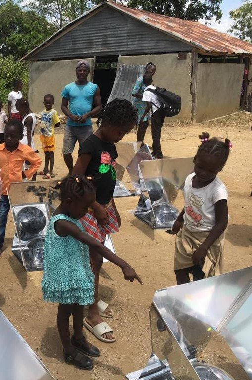
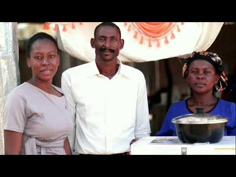
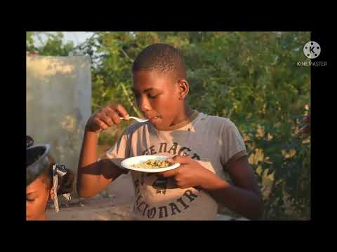

Education
We created Haiti's first university course on solar cooking — building local expertise that lasts well beyond any single project.
We mobilize families to adopt solar cookers as a cleaner alternative to charcoal and wood — and we surround that change with education, local enterprise, and real data so it sticks.
"Haitian families suffer toxic effects from the charcoal or wood that cooks their daily meals." That dependence drives respiratory disease, drains household budgets, and fuels deforestation — a trap that hits women and children hardest.
Solar cooking breaks the cycle at its root: it removes the smoke, removes the fuel cost, and removes a major driver of cutting trees — all using sunlight that is free and abundant.

A cooker on its own isn't enough. Lasting adoption takes teaching, trust, affordability, and evidence.
We created Haiti's first university course on solar cooking — building local expertise that lasts well beyond any single project.
Our Haitian team runs live sessions with families, schools, churches, and community groups so people see results first-hand.
Cookers are priced far below cost to encourage entrepreneurship and reach low-income households that need them most.
Cellphone surveys document each family's experience and surface innovations, so the program keeps getting better.
Some cookers are manufactured in Haiti — keeping money in the local economy and making repairs simple and close to home.
We focus on institutions serving low-income children and adolescent girls, where cleaner cooking changes the most lives.
One simple change ripples outward across health, climate, and opportunity.
Sunlight replaces purchased charcoal and wood.
No cooking smoke means fewer respiratory illnesses.
Lower emissions and less pressure on Haiti's forests.
Reduced wood-cutting slows deforestation.
Women and girls gain health, time, and enterprise.

PPAF collaborates internationally and on the ground — in Haiti, the Dominican Republic, and Madagascar — with organizations, governments, and the people we serve.
These short videos show the damage caused by charcoal cooking and how colleagues in Hinche and Jacmel are advancing practical alternatives.

Local leadership and solar cooking work in central Haiti.

Fedno Lubin explains the opportunity in this English-language video.
A familiar meal demonstrates what the technology can do.
Your support funds demonstrations, training, and below-cost cookers for the households that need them most.